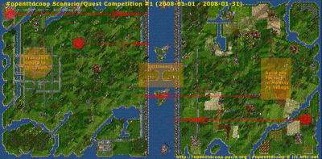
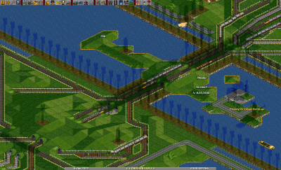
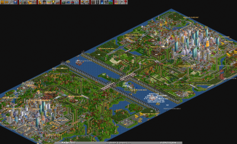
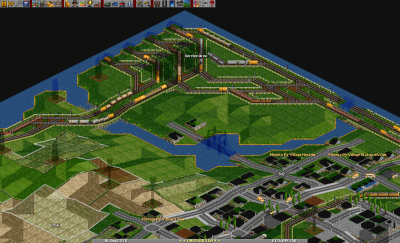
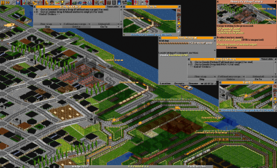

OSQC#01 (finally) finished
Dear folks,
some of you may remember the long forgotten #openttdcoop scenario quest competition (osqc). We tried but failed to gather the judgings of more than two people (Mark and myself) on the 8 final submissions to the contest. A far bigger number of people actually played that map back in early 2008, though.
A complete description of the task and the initial map supplied to the participants can be found here. A quick recap is this image 
Both Mark and myself came to the exact same order of ranking for the players, so finally, the winner is
A very close 2nd place was taken by

- tneo
- Pikita
- Doke
- Fragster
- Wookie
Thank you for your participation, you all did play a great game and it was fun to look through the games and see the different solutions to the problems posed 🙂 A zip archive of all submissions can be found here, the detailed evaluations are found in this OpenOffice spreadsheet. The submission of Sedontane couldn’t be evaluated unfortunately as it was prepared with a patched version of OpenTTD which couldn’t be opened easily.
A few highlights
The biggest challange was to bottleneck in the middle of the map where much traffic had to pass through. The best solutions resorted to a three-level approach like Shader applied: 

which was necessary, given the sizes of the towns: 

Worth mentioning is also the different solutions on how to cope with the breakdowns which were enabled. A nice looking and efficient solutions was built by tneo: 
All trains coming from the factory to the right had to pass through this service center so that they could enter the bottleneck area freshly serviced.

Remarkable is also how Shader maintains a good rating at his factory. Especially look at train #34 and the distance it travels 🙂 
The station is integrated with the saw mill which receives wood both by ship and by train. Goods are transported (as required by the scenario) over the gap to the other side.

Stay tuned for an upcoming 2nd event of this type 🙂
Categories: Community News, osqc
Kommer May 9, 2009 10:57
Congrats to shader! nice solution to the bottleneck problem 🙂
Clifs May 25, 2009 09:11
Amazing three level solution! I can’t wait to look at the rest of the submissions. Glad I didn’t try, I would have embarrassed myself.
Boukev May 31, 2009 09:26
Congratulations to Shader, love the 3 stepped-bottleneck! In case a second event of this type is started count me in 😀 I love a challenge. (And you need someone for the 8th place :))
Sedontane November 23, 2009 15:46
The 8th place was Me but I was unevaluated, shame
Hope you run a second one cos I would love to go again!